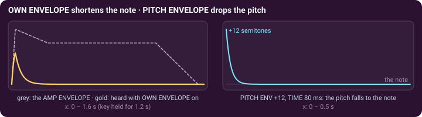

Subtractive synthesis with wavelets · page 3 of 3 · oscillators A1 and A2
Making it move, finishing the sound
The oscillator and its filter make a tone. Envelopes, LFOs, the voice filter and the effects shape it in time.
Tuning, own envelope, pitch envelope
The TUNE · OWN ENVELOPE · PITCH ENVELOPE card belongs to one oscillator. OCTAVE, SEMI and FINE tune it against the others (AA · Slow Violins tunes A1 six cents sharp and A2 six cents flat, both an octave up). OWN ENVELOPE gives the oscillator a private ADSR that multiplies the voice's AMP ENVELOPE, so it can only shorten the oscillator: a click, a pluck, a strike. PITCH ENV starts the oscillator that many semitones (±48) away from the note, and TIME says how long it takes to fall back.

Moving the wavelet controls
- The MOD ENVELOPE (an ADSR) drives ENV AMT of the scale filters and ENV>WAV, the morph.
- LFO 1 moves, at the rate you choose (RATE, or SYNC to the tempo in the plug-in): PITCH (vibrato), CUTOFF, POSITION, WAVELET (the morph), SPARSITY, RESO and ENV>WAV, each by the amount of its knob. Shapes: sine, triangle, saw, square, sample & hold.
- LFO 2 and LFO 3 (two tabs of one card) each move one control, chosen with TARGET among 19, in every oscillator that has it, by AMOUNT (negative reverses it). Among them: Source Phase, Sparsity, Source Width, Window Width, Window Depth, Wavelet Morph. A wavelet control that moves makes the timbre swim, which no filter sweep does: this is the SuperModulation of the presets of that name (AA · Deep Ripple).
The rest of the voice
Each note is rendered by its own voice (up to 16, VOICES). Its oscillators are added by OSC MIX (with the SUB OSC, a plain wave one or two octaves down), then pass a conventional resonant FILTER (LADDER, dark and gritty, or OTA, round and smooth; its CUTOFF is in hertz and it has its own ADSR), then the AMP ENVELOPE (VELOCITY sets how much the key's strength matters). UNISON plays 1 to 4 detuned copies (DETUNE in cents) spread by STEREO; GLIDE and the portamento switch (OFF · POLY · LEGATO) slide between notes. All the notes then share the EFFECTS: DRIVE, CHORUS, a ping-pong delay, a reverb, and a soft limiter. PUNCH, at the right of the effects, gives every note a stronger start, most on the low notes: 0 is off, 50 % (every preset) a light punch, 100 % a strong one; it never lowers the level.

Three recipes
| A · Warm Pad | A smooth wavelet (Coiflet 3), CUTOFF 5 with a little RESO, a quick AMP ATTACK (5 ms) and a long release (1.4 s), UNISON 3 wide in the stereo field, a little delay and a long reverb. |
|---|---|
| A · Wave Brass | Daubechies 20, CUTOFF 3.3, SLOPE 36, RESO 8; ENV AMT +4 so that every note opens the filter by four bands as the MOD ENVELOPE rises (0.06 s); MORPH and ENV>WAV carry the timbre towards the second wavelet. |
| AA · Drum Bloom LGT | A2 is a sine one octave up, with OWN ENVELOPE on (decay 0.19 s) and a PITCH ENV of +16 semitones in 50 ms: the thump of a drum. A1 (a square) and the slow LFOs bloom around it. |